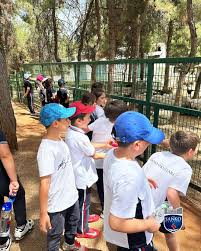

Gaziantep Hayvanat Bahçesi’nde düzenlenen rehberli okul gezileri, öğrencilerin doğayı ve hayvanları yakından tanımalarını sağlayan kapsamlı ve eğitici bir deneyim sunar. Türkiye’nin en büyük ve dünyanın sayılı doğal yaşam parklarından biri olan bu merkezde, profesyonel rehberler eşliğinde yapılan geziler sayesinde çocuklar zürafa, zebra, aslan, kuşlar, sürüngenler ve akvaryum canlıları gibi pek çok türü gözlemleyerek onların yaşam döngüsü, beslenme alışkanlıkları ve ekolojik önemi hakkında bilgi edinir. Program kapsamında hayvan besleme gösterileri düzenlenir, öğrenciler çevre bilinci atölyelerine katılarak geri dönüşüm ve doğayı koruma konularında interaktif etkinlikler gerçekleştirir, ayrıca merak ettikleri soruları rehberlere yöneltme fırsatı bulurlar. Bu geziler, çocuklara hayvan sevgisi ve çevre bilinci kazandırmanın yanı sıra bilimsel meraklarını artırarak ekolojik farkındalık oluşturmaya katkı sağlar. Öğretmenler için ders dışı uygulamalı eğitim imkânı sunan bu etkinlikler, öğrencilerin hem eğlenip hem öğrenmelerine olanak tanır ve doğayla bağ kurmalarını destekleyen unutulmaz bir deneyim haline gelir.